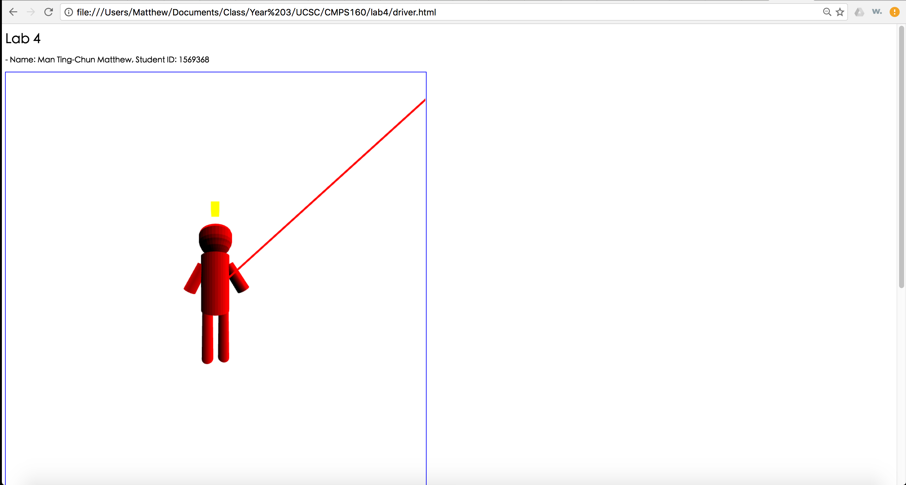

Name: Man Ting-Chun Matthew
Login ID: timan
Date: 2016-11-12
High Level Description (what was implemented, what was not, any special features - Last Point):
- Lab4 features:
- Zooming: When no object is selected, scrolling up or down will zoom in or out by changing the fov(only for perspective view).
- Panning: When no object is selected, clicking on the background and release at another position will cause the camera to pan by changing the x y coordinates of the camera positions and look at positions(for both perspective and orthographic projection).
- Moving camera in and out: When no object is selected, middle clicking together with scrolling will change the camera position in the z-axis by changing the z coordinates of the camera position and look at position(for both perspective and orthographic projection, but no visible change in orthographic view). The amount of moving is scaled up so as to differentiate from zooming.
- Old features:
- Draw a line in the middle of the canvas to show the rotation axis.
- Points of mouse clicks are stored in the x_y_z_coordinates[0] array.
- Rotated points are calculated and saved in the 2D x_y_z_coordinates array.
- Colors values are stored in the 2D ver_colors.(Default to be (0,1,0))
- Lines are drawn between two points for each left click.
- Rubberband line is drawn between the last position and current mouse position.
- When right-click is detected, the SOR Object is drawn.
- When right-click is detected, the surface normal values are also calculated.
- When right-click is detected, the colors for each vertex is recalculated, the colors for the four vertex of each polygon is the same.
- Every time the SOR Object is drawn, the program does not allow extra points to be added (ended=True).
- Saving can be done by putting the file name then clicking save.
- During saving, color values are neglected.
- Loading can be done by choosing the file then click Extract SOR.
- During loading, default color values (0,1,0) are added.
- Toggle button added for showing surface normals.
- Toggle buttons added for changing surface shading and turning on ambient or specular lighting.
- Default to be using diffuse lighting only and flat shading
- When ambient and specular lighting are turned off, their values are set to [0,0,0].
- When ambient and specular lighting are turned on, their values are change to [0,0,0.2] and [0,1,0] respectively.(Values are used in calculations)
- Glossiness factor of object default to be 1.
- Slider added for changing the glossiness factor of the object, ranging from 1 to 20.
- Created a 1001x1001 white canvas with 1px border.
- New light source added as a yellow light.
- Added a yellow cube and red line as light sources.
- When the light sources(yellow cube or red line) are clicked, the sources turn gray and they are turned off, so the object becomes dimmer.
- Toggle button added for switching between orthographic (default) and perspective projection.
- Created custom object class.
- All transformation are stored within the variables inside the class.
- Pick object by clicking on object, and all it's color is changed to 0.5 of original when selected.
- After picking an object, scaling can be done by scrolling.(Only updated when the object is unclicked)
- After picking an object, translation can be done by left click and drag to another position.
- After picking an object, rotation can be done by right click and drag to another position.
User Guide
- Only drawing on the right side is preferred.
- Only draw from top to bottom
- Input FileName before clicking Save
- Choose file before clicking Extract SOR
Driver HTML File
